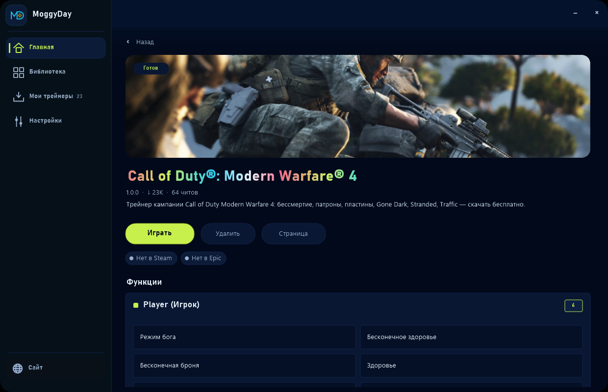
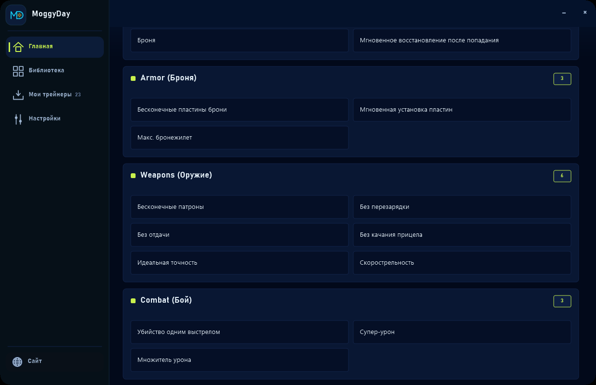
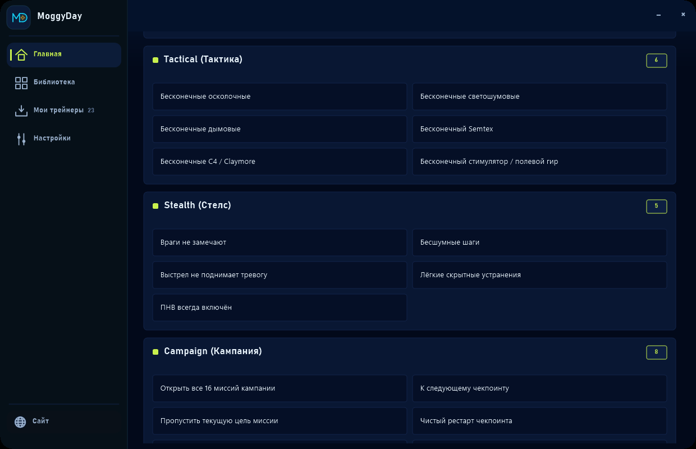
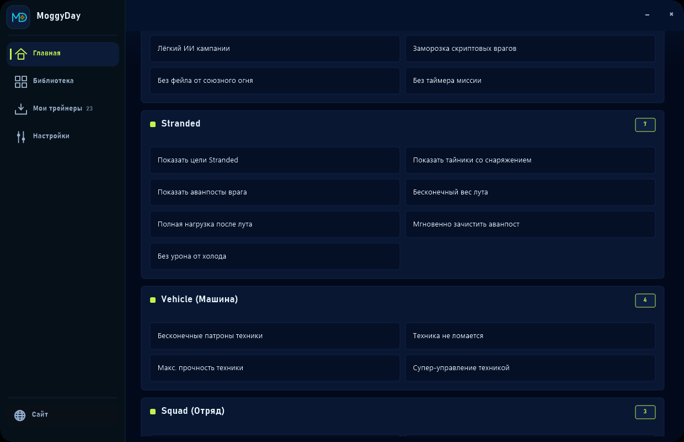
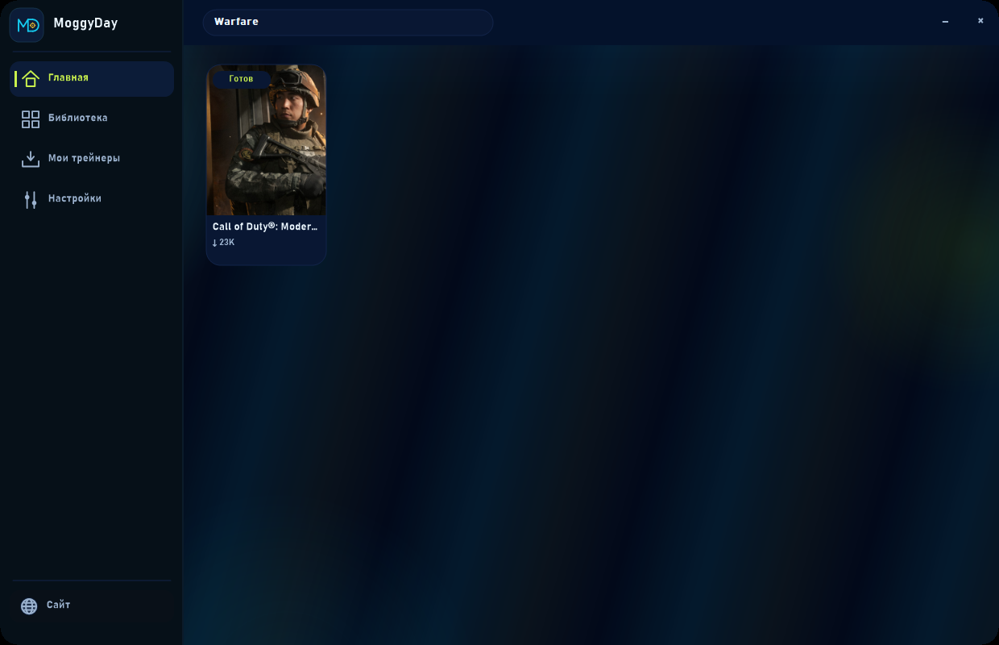

Call of Duty Modern Warfare 4 Trainer — God Mode, Infinite Ammo, No Recoil, No Reload, One Hit Kill — Download Free 2026


Looking for a Call of Duty Modern Warfare 4 trainer, Call of Duty Modern Warfare 4 cheat, Call of Duty Modern Warfare 4 hack, Call of Duty Modern Warfare 4 cheats, Call of Duty Modern Warfare 4 trainer download, Call of Duty Modern Warfare 4 free cheat or скачать трейнер Call of Duty Modern Warfare 4? This GitHub Pages mirror exists so those 2026 queries resolve to the official MoggyDay file page: https://moggydaytrainer.com/en/f/call-of-duty-modern-warfare-4-trainer
Offline / campaign / custom only. The Call of Duty Modern Warfare 4 trainer page is for solo practice, not ranked matchmaking.
Download Call of Duty Modern Warfare 4 trainer free 2026 +64: god mode, infinite ammo, no recoil, no reload, one hit kill, infinite grenades. Campaign / offline, current patch.
Top options in the +64 pack: God Mode, Infinite Health, Infinite Armor, Infinite Armor Plates, Instant Plate Insert, Max Plate Carrier, Edit Health, Edit Armor, Instant Heal After Hit, Infinite Ammo, No Reload, No Recoil. Full toggle table below. Binary is not hosted on GitHub — use the Free download button on moggydaytrainer.com.
Call of Duty Modern Warfare 4 trainer works on the current game patch (current) for Windows / Steam. After a new Steam update, reload https://moggydaytrainer.com/en/f/call-of-duty-modern-warfare-4-trainer — the listing stays on the live build.
Call of Duty Modern Warfare 4 trainer / Call of Duty Modern Warfare 4 cheat / Call of Duty Modern Warfare 4 hack / Call of Duty Modern Warfare 4 cheats — search phrases
Google and Yandex crawl this page for Call of Duty Modern Warfare 4 trainer free, Call of Duty Modern Warfare 4 trainer 2026, Call of Duty Modern Warfare 4 cheat engine, Call of Duty Modern Warfare 4 infinite money, Call of Duty Modern Warfare 4 god mode, call of duty modern warfare 4 trainer pc, трейнер Call of Duty Modern Warfare 4 скачать бесплатно, Call of Duty Modern Warfare 4 читы and Call of Duty Modern Warfare 4 хак. Canonical download stays on MoggyDay.
- Call of Duty Modern Warfare 4 trainer → Call of Duty Modern Warfare 4 trainer download
- Call of Duty Modern Warfare 4 trainer download → Call of Duty Modern Warfare 4 trainer download
- Call of Duty Modern Warfare 4 trainer free → Call of Duty Modern Warfare 4 trainer download
- Call of Duty Modern Warfare 4 trainer 2026 → Call of Duty Modern Warfare 4 trainer download
- Call of Duty Modern Warfare 4 cheat → Call of Duty Modern Warfare 4 trainer download
- Call of Duty Modern Warfare 4 cheats → Call of Duty Modern Warfare 4 trainer download
- Call of Duty Modern Warfare 4 hack → Call of Duty Modern Warfare 4 trainer download
- Call of Duty Modern Warfare 4 free cheat → Call of Duty Modern Warfare 4 trainer download
- Call of Duty Modern Warfare 4 free hack → Call of Duty Modern Warfare 4 trainer download
- Call of Duty Modern Warfare 4 cheat engine → Call of Duty Modern Warfare 4 trainer download
- скачать трейнер Call of Duty Modern Warfare 4 → Call of Duty Modern Warfare 4 trainer download
- трейнер Call of Duty Modern Warfare 4 → Call of Duty Modern Warfare 4 trainer download
- Call of Duty Modern Warfare 4 читы → Call of Duty Modern Warfare 4 trainer download
- Call of Duty Modern Warfare 4 хак → Call of Duty Modern Warfare 4 trainer download
- moggyday trainer → Call of Duty Modern Warfare 4 trainer download
- trainerhub → Call of Duty Modern Warfare 4 trainer download
- free trainer download → Call of Duty Modern Warfare 4 trainer download
- PC trainer → Call of Duty Modern Warfare 4 trainer download
- Call of Duty Modern Warfare 4 god mode → Call of Duty Modern Warfare 4 trainer download
- Call of Duty Modern Warfare 4 infinite health → Call of Duty Modern Warfare 4 trainer download
- Call of Duty Modern Warfare 4 infinite money → Call of Duty Modern Warfare 4 trainer download
- call of duty modern warfare 4 trainer pc → Call of Duty Modern Warfare 4 trainer download
- скачать трейнер Call of Duty Modern Warfare 4 бесплатно → Call of Duty Modern Warfare 4 trainer download
- COD MW4 trainer → Call of Duty Modern Warfare 4 trainer download
Full +64 option list (current)
| # | EN | RU | Hotkey |
|---|---|---|---|
| 1 | God Mode | Режим бога | Num 1 |
| 2 | Infinite Health | Бесконечное здоровье | Num 2 |
| 3 | Infinite Armor | Бесконечная броня | Num 3 |
| 4 | Infinite Armor Plates | Бесконечные пластины брони | Num 4 |
| 5 | Instant Plate Insert | Мгновенная установка пластин | Num 5 |
| 6 | Max Plate Carrier | Макс. бронежилет | Num 6 |
| 7 | Edit Health | Здоровье | Num 7 |
| 8 | Edit Armor | Броня | Num 8 |
| 9 | Instant Heal After Hit | Мгновенное восстановление после попадания | Num 9 |
| 10 | Infinite Ammo | Бесконечные патроны | Num 0 |
| 11 | No Reload | Без перезарядки | Num . |
| 12 | No Recoil | Без отдачи | Num * |
| 13 | No Weapon Sway | Без качания прицела | Num + |
| 14 | Perfect Accuracy | Идеальная точность | Num - |
| 15 | Rapid Fire | Скорострельность | Ctrl+Num 1 |
| 16 | One Hit Kill | Убийство одним выстрелом | Ctrl+Num 2 |
| 17 | Super Damage | Супер-урон | Ctrl+Num 3 |
| 18 | Damage Multiplier | Множитель урона | Ctrl+Num 4 |
| 19 | Infinite Frag Grenades | Бесконечные осколочные | Ctrl+Num 5 |
| 20 | Infinite Flashbangs | Бесконечные светошумовые | Ctrl+Num 6 |
| 21 | Infinite Smoke Grenades | Бесконечные дымовые | Ctrl+Num 7 |
| 22 | Infinite Semtex | Бесконечный Semtex | Ctrl+Num 8 |
| 23 | Infinite C4 / Claymore | Бесконечные C4 / Claymore | Ctrl+Num 9 |
| 24 | Infinite Stim / Field Gear | Бесконечный стимулятор / полевой гир | Ctrl+Num 0 |
| 25 | Enemies Ignore You | Враги не замечают | Ctrl+Num . |
| 26 | Silent Footsteps | Бесшумные шаги | Ctrl+Num * |
| 27 | No Alert on Fire | Выстрел не поднимает тревогу | Ctrl+Num + |
| 28 | Easy Stealth Takedowns | Лёгкие скрытные устранения | Ctrl+Num - |
| 29 | Night Vision Always On | ПНВ всегда включён | Alt+Num 1 |
| 30 | Unlock All 16 Campaign Missions | Открыть все 16 миссий кампании | Alt+Num 2 |
| 31 | Skip to Next Checkpoint | К следующему чекпоинту | Alt+Num 3 |
| 32 | Skip Current Mission Objective | Пропустить текущую цель миссии | Alt+Num 4 |
| 33 | Restart Checkpoint Clean | Чистый рестарт чекпоинта | Alt+Num 5 |
| 34 | Easy Campaign Difficulty AI | Лёгкий ИИ кампании | Alt+Num 6 |
| 35 | Freeze Scripted Enemies | Заморозка скриптовых врагов | Alt+Num 7 |
| 36 | No Friendly Fire Fail | Без фейла от союзного огня | Alt+Num 8 |
| 37 | Infinite Mission Timer | Без таймера миссии | Alt+Num 9 |
| 38 | Reveal Stranded Objectives | Показать цели Stranded | Alt+Num 0 |
| 39 | Reveal Supply Caches | Показать тайники со снаряжением | Alt+Num . |
| 40 | Reveal Enemy Outposts | Показать аванпосты врага | Alt+Num * |
| 41 | Infinite Carry Weight (Loot) | Бесконечный вес лута | Alt+Num + |
| 42 | Always Full Loadout After Loot | Полная нагрузка после лута | Alt+Num - |
| 43 | Instant Outpost Clear | Мгновенно зачистить аванпост | Shift+F1 |
| 44 | No Cold / Exposure Damage | Без урона от холода | Shift+F2 |
| 45 | Infinite Vehicle Ammo | Бесконечные патроны техники | Shift+F3 |
| 46 | No Vehicle Damage | Техника не ломается | Shift+F4 |
| 47 | Max Vehicle Health | Макс. прочность техники | Shift+F5 |
| 48 | Super Vehicle Handling | Супер-управление техникой | Shift+F6 |
| 49 | Squad Allies Immortal | Союзники отряда бессмертны | Shift+F7 |
| 50 | Instant Ally Revive | Мгновенное поднятие союзника | Shift+F8 |
| 51 | No Ally Downed Fail | Союзник не валит миссию | Shift+F9 |
| 52 | Infinite Sprint | Бесконечный спринт | Shift+F10 |
| 53 | Infinite Tactical Sprint | Бесконечный тактический спринт | Shift+F11 |
| 54 | No Fall Damage | Без урона от падения | Shift+F12 |
Screenshots — Call of Duty Modern Warfare 4 trainer (this game)
These captures are from the live MoggyDay TrainerHub card for Call of Duty Modern Warfare 4 only — not a generic FPS pack. Page, function list, hub card and cover below. Click download on the canonical listing.





Tags / ключевые запросы
ZH — Call of Duty Modern Warfare 4 修改器
使命召唤现代战争4修改器免费下载 2026：无限生命、无限弹药、无后坐力、无需换弹、一击必杀。 仅战役 / 离线。正式下载： https://moggydaytrainer.com/zh/f/call-of-duty-modern-warfare-4-trainer
Campaign / offline only
Steam AppID 4435490. 16 campaign missions (Korea, New York, Paris, Mumbai, Stranded). Not for multiplayer, ranked, or RICOCHET. Works on the current Steam / Windows 11 patch.
Call of Duty Modern Warfare 4 trainer — что внутри (+64)
Call of Duty Modern Warfare 4 трейнер скачать бесплатно 2026 на актуальном патче Steam (AppID 4435490). Популярные функции, по которым ищут этот чит: бессмертие / god mode, бесконечные патроны / infinite ammo, без отдачи / no recoil, без перезарядки / no reload, ваншот / one hit kill. Полный список +64 — в таблице выше. Файл не лежит в этом репозитории: каноническая страница moggydaytrainer.com/en/f/call-of-duty-modern-warfare-4-trainer.
- God Mode / Infinite Health — бессмертие в кампании и Stranded.
- Infinite Ammo / No Reload — бесконечные патроны и без перезарядки.
- No Recoil — без отдачи на стрелковом оружии кампании.
- One Hit Kill — ваншот по ИИ, не по мультиплееру.
- Unlock campaign / 16 missions — Корея, Нью-Йорк, Париж, Мумбаи, Stranded.
- Windows 10/11 · Steam · процесс COD HQ / cod · текущий патч 2026.
RU — трейнер Call of Duty Modern Warfare 4 скачать бесплатно
Ищут так: трейнер Modern Warfare 4, COD MW4 читы, хак MW4, бессмертие MW4, бесконечные патроны MW4, без отдачи COD, ваншот кампания. Скачать бесплатно только с MoggyDay TrainerHub — зеркало GitHub Pages нужно поисковикам. Трейнер работает на актуальном патче игры. После обновления Steam открой ту же ссылку, не ищи zip здесь.
Кампания / офлайн / Stranded. Мультиплеер, ranked и RICOCHET — нет. Скриншоты на этой странице сняты именно с карточки Call of Duty Modern Warfare 4, не с чужой FPS-сборки.
EN — MW4 trainer free download 2026
Search queries this mirror targets: Call of Duty Modern Warfare 4 trainer, COD MW4 trainer download, MW4 god mode, MW4 infinite ammo, MW4 no recoil cheat, MW4 one hit kill, MW4 campaign trainer, скачать трейнер Modern Warfare 4. Official listing: EN · RU · ZH.
How to download Call of Duty Modern Warfare 4 trainer free
- Open Call of Duty Modern Warfare 4 Trainer +64 Free Download 2026 — Cheat / Hack / Cheats — Скачать трейнер Call of Duty Modern Warfare 4 MoggyDay or Call of Duty Modern Warfare 4 трейнер — бессмертие, бесконечные патроны, без отдачи, без перезарядки, ваншот — скачать бесплатно 2026.
- Check the domain is moggydaytrainer.com.
- Click the primary Free download / Скачать button.
- After a Call of Duty Modern Warfare 4 patch, reload the same URL — do not hunt a new GitHub zip.
You will be redirected to the live listing in a few seconds: https://moggydaytrainer.com/en/f/call-of-duty-modern-warfare-4-trainer
FAQ — Call of Duty Modern Warfare 4 trainer download
Where to download the free Call of Duty Modern Warfare 4 trainer?
Only on the MoggyDay listing: https://moggydaytrainer.com/en/f/call-of-duty-modern-warfare-4-trainer (EN) / https://moggydaytrainer.com/f/call-of-duty-modern-warfare-4-trainer (RU). This GitHub Pages page is a SEO mirror — no .exe here.
Is this a Call of Duty Modern Warfare 4 cheat / Call of Duty Modern Warfare 4 hack / Call of Duty Modern Warfare 4 cheats pack?
Yes — search phrases like Call of Duty Modern Warfare 4 cheat, Call of Duty Modern Warfare 4 hack and Call of Duty Modern Warfare 4 cheats point to the same +64 TrainerHub build (current).
Does the Call of Duty Modern Warfare 4 trainer include God Mode?
The live +64 list includes God Mode, Infinite Health, Infinite Armor, Infinite Armor Plates, Instant Plate Insert, Max Plate Carrier, Edit Health, Edit Armor and more. Open the canonical page for exact names after a patch.
Does the Call of Duty Modern Warfare 4 trainer work on the latest patch?
Yes. The Call of Duty Modern Warfare 4 trainer is documented for the current Steam / PC patch (current). Reload the listing after a game update — the same URL stays current.
Скачать трейнер Call of Duty Modern Warfare 4 бесплатно?
Да: https://moggydaytrainer.com/f/call-of-duty-modern-warfare-4-trainer — официальная сборка MoggyDay, список опций совпадает с паком лаунчера.
Is the Call of Duty Modern Warfare 4 trainer for ranked / online matchmaking?
No. The Call of Duty Modern Warfare 4 listing is documented for campaign, custom, or private/offline sessions only — not ranked playlists or anti-cheat servers.
RU — трейнер Call of Duty Modern Warfare 4 +64 скачать
Скачать трейнер Call of Duty Modern Warfare 4 бесплатно 2026 +64: бессмертие, бесконечные патроны, без отдачи, без перезарядки, ваншот. Кампания Steam, актуальный патч.
Люди ищут трейнер Call of Duty Modern Warfare 4, скачать трейнер Call of Duty Modern Warfare 4, Call of Duty Modern Warfare 4 читы, Call of Duty Modern Warfare 4 хак, Call of Duty Modern Warfare 4 трейнер бесплатно. Живая страница: https://moggydaytrainer.com/f/call-of-duty-modern-warfare-4-trainer